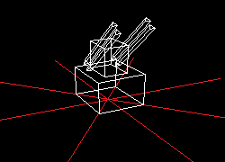

Overview
The targets in most of your missions would be enemy aircraft and ground batteries, which are marked by their red highlights in contrast to fiendly units' light blue highlights. Weapons
Machine Guns
The machine gun is the primary weapon of most aircraft. It has moderate range and fires a spray of projectiles that makes it easier to hit moving targets.
Bombs
Bombs are simply released from the aircraft without any speed, and freefall in gravity until they collide with something.
Bombs damage everything in a 75m radius around the point of impact. This means that it is not necessary to score a direct hit on the target, though they could also damage the aircraft which launched them if it is too close.
Missiles
Missiles are slow moving projectiles that home onto the selected target.
Missiles take a moment before they activate and begin seeking their target, making them useless at short range. They also have a large turning radius and may miss targets that are manoeuvring aggressively.
Machine Guns
The machine gun is the primary weapon of most aircraft. It has moderate range and fires a spray of projectiles that makes it easier to hit moving targets.Bombs
Bombs are simply released from the aircraft without any speed, and freefall in gravity until they collide with something.Bombs damage everything in a 75m radius around the point of impact. This means that it is not necessary to score a direct hit on the target, though they could also damage the aircraft which launched them if it is too close.
Missiles
Missiles are slow moving projectiles that home onto the selected target.Missiles take a moment before they activate and begin seeking their target, making them useless at short range. They also have a large turning radius and may miss targets that are manoeuvring aggressively.
Units
Ground Battery

Stationary emplacements, ground batteries have a large amount of firepower and hitpoints. On the other hand, the fact that they are stationary means they are easily avoided and easy targets.
An enemy ground battery
Ground Batteries have a maximum and minimum elevation for firing, making it possible to avoid their fire entirely by approaching at the correct angle.
Aircraft

A friendly aircraft
Aircraft tend to be armed with machine guns and one secondary weapon, either bombs or missiles.